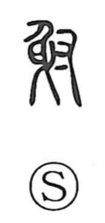

射

Kun: iru, sasu | On: sha
to shoot ・ discharge
Explanation
In the oldest forms, this character brings together a bow (弓), an arrow (矢), and a hand (又), vividly depicting the act of nocking an arrow and letting it fly. From this concrete scene it comes to mean “to shoot.” In later script the graph was written with 身 over 寸, but the underlying image is the original bow–arrow–hand composition. Because arrows were regarded as sacred, drawing the bow and shooting was performed as a solemn rite to exorcize and purify a place; in later times the verb naturally extended to the discharge of firearms as well.